Analysis of a longitudinal screen: from counts to treatment-specific hits
Emanuel Michele Soda
Istituto Europeo Oncologia (IEO), Milano, Italyemanuelsoda@gmail.com
Elena Ceccacci
Istituto Europeo Oncologia (IEO), Milano, Italyelena.ceccacci@ieo.it
2026-10-23
Source:vignettes/Longitudinal_Screen_Analysis.Rmd
Longitudinal_Screen_Analysis.RmdAbout this tutorial
This tutorial analyses a complete pooled shRNA screen with ScreenR, from the raw barcode counts to a list of genes whose knockdown is depleted because of the treatment, and to the evidence that supports each of them. The screen has the structure of many drug-sensitization screens: an infected and selected cell population is split into control and treated cultures, which are sampled at two time points with three biological replicates each.
The question is not only “which genes are depleted?”, but:
- Which genes are depleted in treated cells compared with control cells at the same time point, rather than lost in all cultures because they are needed for growth (essential genes)?
- Is the depletion supported by several shRNAs of the gene and by the biological replicates?
- Is it present at both time points, or does it appear (or grow) over time?
Each step explains why it is needed, what ScreenR does, how to read the result and which decisions it involves. The tutorials 1, 2 and 3 describe the individual functions in more detail; this one puts them together for a longitudinal design.
ScreenR does not impose a look on its plots: they use the current
ggplot2 theme, so a theme set once with theme_set() applies
to every plot of the analysis. Here we use a light theme with slightly
larger text:
theme_set(theme_light(base_size = 12))The experiment
Design
The cells are infected with a pooled library of barcoded shRNAs (about 10 shRNAs for each of 534 genes) and selected with puromycin, which kills the cells that were not infected. The selected population is then split into control and treated cultures, sampled at two time points:
| Sample(s) | Stage | Condition | Replicates | Role in the analysis |
|---|---|---|---|---|
| T0 | Right after infection, before selection | Infected cells | 1 | Representation of the library in the cells; quality control of the infection |
| Puro | After puromycin selection | Baseline | 1 | Starting population of all the cultures; reference for the loss of fitness |
| T3 | First time point | Control | 3 | Reference for the treatment effect at T3 |
| T3 | First time point | Treated | 3 | Treatment effect at T3 |
| T4 | Second time point | Control | 3 | Reference for the treatment effect at T4 |
| T4 | Second time point | Treated | 3 | Treatment effect at T4 |
That is 14 samples. The controls and the treated cultures have the same history except the treatment, so the treatment effect is measured as treated versus control at the same time point: whatever happens in both (for example the loss of shRNAs against genes needed for growth) cancels out. The T0 and Puro samples are single references: they describe where the cultures start from and are used for quality control and for the fitness effects, not for the treatment effect.
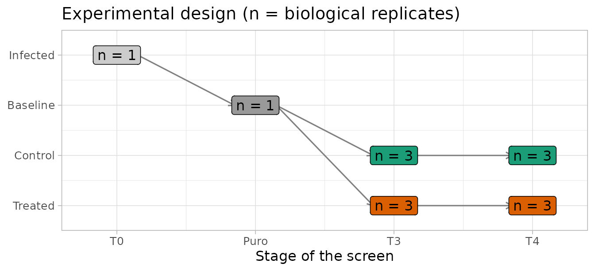
The data
ScreenR includes this screen as count_table (the reads
of each barcode in each sample, from the alignment of the sequencing
reads to the library) and annotation_table (the gene
targeted by each barcode). See ?count_table and
?annotation_table.
data(count_table)
data(annotation_table)
dim(count_table)
#> [1] 5323 15
colnames(count_table)
#> [1] "Barcode" "Time_1" "Time_2" "Time_3_TRT_rep1"
#> [5] "Time_3_TRT_rep2" "Time_3_TRT_rep3" "Time_3_rep1" "Time_3_rep2"
#> [9] "Time_3_rep3" "Time_4_TRT_rep1" "Time_4_TRT_rep2" "Time_4_TRT_rep3"
#> [13] "Time_4_rep1" "Time_4_rep2" "Time_4_rep3"
head(annotation_table[, c("Barcode", "Gene")], 3)
#> Barcode Gene
#> 1 10208 Gene_380
#> 2 10502 Gene_380
#> 3 10796 Gene_380The count table has three rows with the barcode "*": the
reads that could not be assigned to any shRNA. They are not barcodes and
appear several times, so they are removed. ScreenR would refuse
duplicated barcode identifiers rather than guess how to combine them
(duplicate_barcodes can sum them instead).
table(count_table$Barcode == "*")
#>
#> FALSE TRUE
#> 5320 3
counts <- count_table[count_table$Barcode != "*", ]The original sample names are not self-explanatory, so the samples are renamed, and their stage, condition and replicate are described explicitly in a sample table instead of being parsed from the names:
samples <- tibble(
Original = colnames(counts)[-1],
Sample = c("T0_Infected", "Puro_Baseline",
paste0("T3_TRT_", 1:3), paste0("T3_CTRL_", 1:3),
paste0("T4_TRT_", 1:3), paste0("T4_CTRL_", 1:3)),
Day = c("T0", "Puro", rep("T3", 6), rep("T4", 6)),
Treatment = c("Infected", "Baseline", rep(c("TRT", "CTRL"), each = 3),
rep(c("TRT", "CTRL"), each = 3)),
Replicate = c(NA, NA, rep(1:3, 4))
)
samples$Group <- ifelse(samples$Day %in% c("T0", "Puro"), samples$Day,
paste(samples$Day, samples$Treatment, sep = "_"))
knitr::kable(samples)| Original | Sample | Day | Treatment | Replicate | Group |
|---|---|---|---|---|---|
| Time_1 | T0_Infected | T0 | Infected | NA | T0 |
| Time_2 | Puro_Baseline | Puro | Baseline | NA | Puro |
| Time_3_TRT_rep1 | T3_TRT_1 | T3 | TRT | 1 | T3_TRT |
| Time_3_TRT_rep2 | T3_TRT_2 | T3 | TRT | 2 | T3_TRT |
| Time_3_TRT_rep3 | T3_TRT_3 | T3 | TRT | 3 | T3_TRT |
| Time_3_rep1 | T3_CTRL_1 | T3 | CTRL | 1 | T3_CTRL |
| Time_3_rep2 | T3_CTRL_2 | T3 | CTRL | 2 | T3_CTRL |
| Time_3_rep3 | T3_CTRL_3 | T3 | CTRL | 3 | T3_CTRL |
| Time_4_TRT_rep1 | T4_TRT_1 | T4 | TRT | 1 | T4_TRT |
| Time_4_TRT_rep2 | T4_TRT_2 | T4 | TRT | 2 | T4_TRT |
| Time_4_TRT_rep3 | T4_TRT_3 | T4 | TRT | 3 | T4_TRT |
| Time_4_rep1 | T4_CTRL_1 | T4 | CTRL | 1 | T4_CTRL |
| Time_4_rep2 | T4_CTRL_2 | T4 | CTRL | 2 | T4_CTRL |
| Time_4_rep3 | T4_CTRL_3 | T4 | CTRL | 3 | T4_CTRL |
The groups define the statistical model: one group for each combination of time point and condition (and one for each reference sample). Replicates of the same group are what the model uses to measure the biological variability.
The ScreenR object
Colors that mean the same thing in every plot
When the object is created, a palette can be given for each sample variable (Treatment, Group, Day, Sample, …). Every plot of ScreenR that colors the samples by one of these variables then uses it, so that, for example, the treated cultures have the same color in all the figures. Here the controls are green and the treated cultures orange, darker at the later time point, and the two reference samples are grey:
group_colors <- c(T0 = "#CCCCCC", Puro = "#999999",
T3_CTRL = "#66C2A5", T3_TRT = "#FC8D62",
T4_CTRL = "#1B9E77", T4_TRT = "#D95F02")
palettes <- list(
Treatment = c(Infected = "#CCCCCC", Baseline = "#999999",
CTRL = "#1B9E77", TRT = "#D95F02"),
Group = group_colors,
Day = c(T0 = "#CCCCCC", Puro = "#999999", T3 = "#7570B3",
T4 = "#E7298A"),
# Each sample takes the color of its group
Sample = setNames(group_colors[samples$Group], samples$Sample)
)Creating the object
object <- create_screenr_object(
table = counts,
annotation = annotation_table,
groups = factor(samples$Group,
levels = c("T0", "Puro", "T3_CTRL", "T3_TRT", "T4_CTRL", "T4_TRT")),
sample_table = samples[, c("Sample", "Day", "Treatment")],
replicates = samples$Replicate,
palettes = palettes
)
object
#> class: screenr_object
#> dim: 5320 14
#> metadata(2): screenr_layout palettes
#> assays(1): counts
#> rownames(5320): 10208 10502 ... 13876 13995
#> rowData names(5): Barcode Gene Gene_ID Sequence Library
#> colnames(14): T0_Infected Puro_Baseline ... T4_CTRL_2 T4_CTRL_3
#> colData names(5): Sample Day Treatment Group Replicate
#> normalization: none (run normalize_data())
names(get_palettes(object))
#> [1] "Treatment" "Group" "Day" "Sample"The palettes are checked when they are set (every value of the
variable must have a color) and can be changed later with
set_palettes(). A palette given directly to a plot replaces
the one of the object.
The ScreenR object is a SummarizedExperiment, the
standard Bioconductor container for assays with row and column
annotation. Each piece of information is stored once, in the place that
fits it:
-
assay(object, "counts"): the raw counts only, one row per barcode and one column per sample. The barcode identifiers are the row names (as text), not a column of the counts. -
rowData(object): the annotation of each barcode (its gene), aligned with the rows. -
colData(object): the Day, Treatment, Group and Replicate of each sample, aligned with the columns.
assay(object, "counts")[1:3, 1:4]
#> T0_Infected Puro_Baseline T3_TRT_1 T3_TRT_2
#> 10208 3520 4283 2493 3998
#> 10502 280 339 140 542
#> 10796 1507 1533 1120 1125
rowData(object)[1:3, c("Barcode", "Gene")]
#> DataFrame with 3 rows and 2 columns
#> Barcode Gene
#> <character> <character>
#> 10208 10208 Gene_380
#> 10502 10502 Gene_380
#> 10796 10796 Gene_380
colData(object)[c(1, 2, 3, 9), c("Day", "Treatment", "Group", "Replicate")]
#> DataFrame with 4 rows and 4 columns
#> Day Treatment Group Replicate
#> <character> <character> <factor> <integer>
#> T0_Infected T0 Infected T0 NA
#> Puro_Baseline Puro Baseline Puro NA
#> T3_TRT_1 T3 TRT T3_TRT 1
#> T4_TRT_1 T4 TRT T4_TRT 1Because rows and columns are matched by identifier, subsetting or
reordering the object keeps counts, annotation and sample information
together, and the object can be used with any Bioconductor tool that
accepts a SummarizedExperiment. The barcodes with no read
in any sample carry no information and are removed:
object <- remove_all_zero_row(object)
dim(object)
#> [1] 5317 14Quality control
Before looking for hits, we check that the screen worked: enough reads in every sample, a library that is still well represented, and replicates that agree. These checks use the raw counts, except where noted.
Sequencing depth
Each sample should have many more reads than barcodes, so that the counts of each shRNA are not dominated by sampling noise.
plot_mapped_reads(object) +
scale_x_discrete(guide = guide_axis(angle = 45))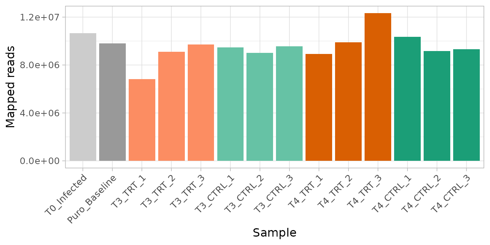
depth <- mapped_reads(object)
range(depth$Mapped) / nrow(object)
#> [1] 1283.595 2318.060Every sample has between 1284 and 2318 reads per barcode on average, well above the usual minimum of a few hundred.
Library representation over the screen
Infection and puromycin selection are bottlenecks: shRNAs carried by few cells can be lost by chance, independently of their target. The number of barcodes without any read and the Gini index (how unevenly the reads are spread over the barcodes: 0 when even, close to 1 when a few barcodes take most reads) show how the representation evolves.
(plot_barcode_lost(object) +
scale_x_discrete(guide = guide_axis(angle = 45))) /
plot_gini(object)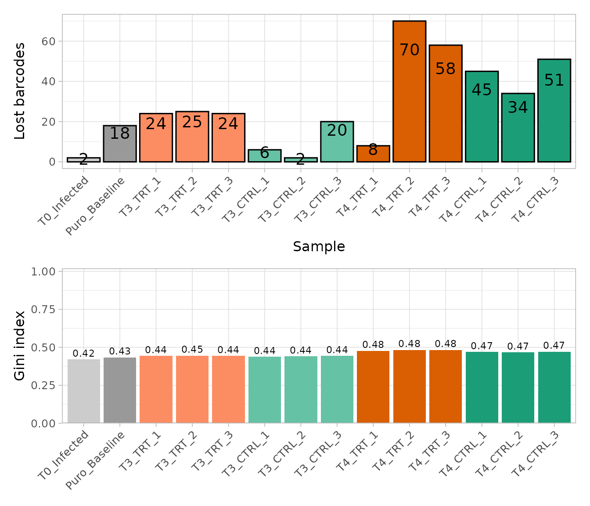
Few barcodes are lost at T0 and after selection, and the Gini index increases slowly over time, as expected when the shRNAs against genes needed for growth drop out. Neither the infection nor the selection caused a bottleneck that would make the counts unreliable.
Agreement between replicates
The replicates of a condition should be more similar to each other than to the other samples. This and the following plots compare normalized counts, so the counts are normalized first, with the TMM method (see the next section).
object <- normalize_data(object, method = "tmm")
plot_replicate_correlation(object)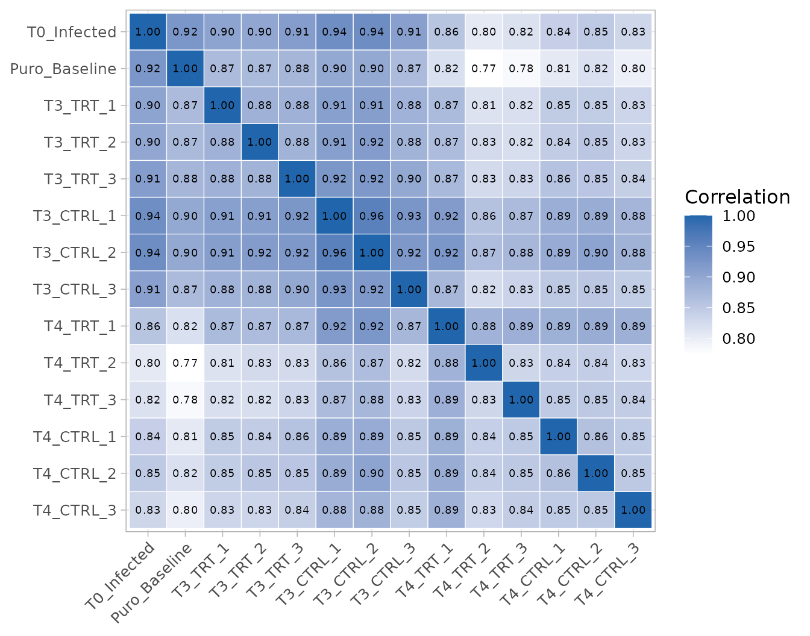
correlation <- cor(log2(get_normalized_count_table(object)[, -1] + 1))
round(correlation["T4_TRT_1", c("T4_TRT_2", "T4_TRT_3", "T3_CTRL_2",
"T3_TRT_1")], 3)
#> T4_TRT_2 T4_TRT_3 T3_CTRL_2 T3_TRT_1
#> 0.883 0.887 0.924 0.870All the correlations are high, and the T3 samples are more similar to each other than to the T4 samples. One sample stands out: T4_TRT_1 is more correlated with some T3 samples (for example T3_CTRL_2) than with the other two T4 treated replicates, and it lost far fewer barcodes than them (see above). Removing a replicate needs a technical reason, which we do not have, so it is kept; the sensitivity analysis at the end checks that the conclusions do not depend on it.
Structure of the samples
Multidimensional scaling (MDS) and principal component analysis (PCA) place similar samples close to each other.
plot_mds(object)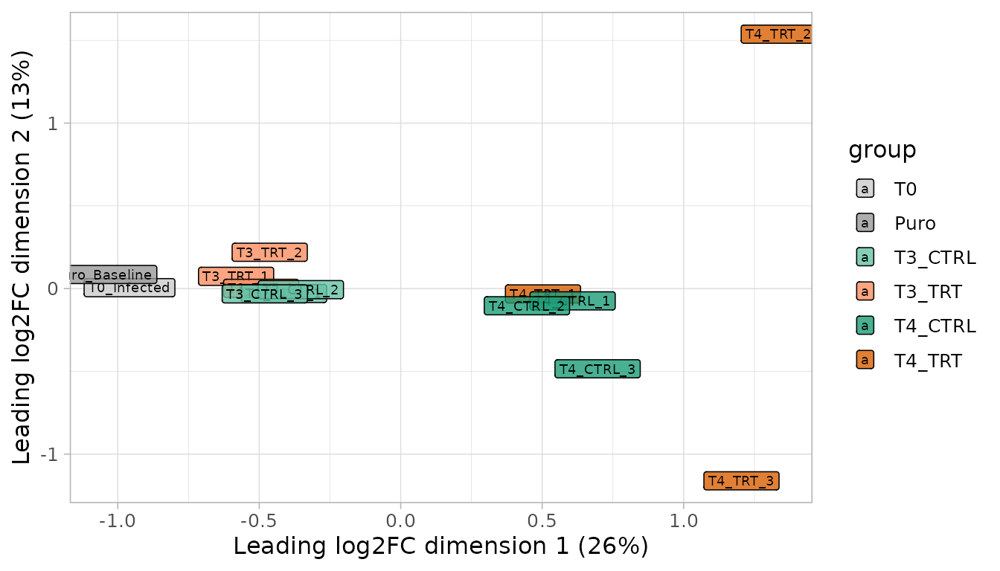
plot_pca(object)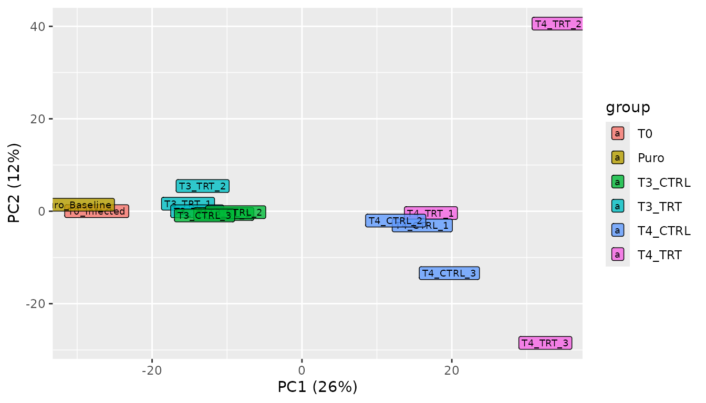
The first dimension orders the samples by time (T0 and Puro, then T3, then T4): the largest source of variation is the growth of the cells, which changes the representation of the shRNAs against growth genes in all the cultures. This is why the treatment effect must be measured within each time point. At T3 the treated and control samples overlap. At T4 two treated replicates (T4_TRT_2 and T4_TRT_3) move away from the controls, in different directions on the second dimension, while T4_TRT_1 stays with the controls: the treated cultures at T4 are heterogeneous, which limits the power to detect treatment effects.
Normalization
Samples are sequenced at different depths, so counts are compared
after dividing each sample by an effective library
size. This analysis uses the TMM normalization
of edgeR (normalize_data(method = "tmm")): the effective
library size of a sample is its total number of reads multiplied by a
TMM factor, which corrects the total when many barcodes are depleted or
enriched in some samples, as happens over the growth of the cultures and
with the treatment.
normalization <- get_normalization(object)
normalization$method
#> [1] "tmm"
round(normalization$norm_factors, 3)
#> T0_Infected Puro_Baseline T3_TRT_1 T3_TRT_2 T3_TRT_3
#> 1.017 1.003 1.002 1.013 1.002
#> T3_CTRL_1 T3_CTRL_2 T3_CTRL_3 T4_TRT_1 T4_TRT_2
#> 1.017 1.018 1.008 0.985 0.983
#> T4_TRT_3 T4_CTRL_1 T4_CTRL_2 T4_CTRL_3
#> 0.977 0.995 0.994 0.986The TMM factors stay close to 1, but they differ between the time points: the factors correct the totals for the shRNAs that drop out over time.
One normalization for the whole analysis. ScreenR records the normalization in the object (the effective library sizes in the colData, the method and the TMM factors in the metadata) and never changes the raw counts. Every result below uses this same normalization: the normalized counts of the plots, the descriptive fold changes and the statistical models. The models use the raw counts, as negative binomial models require, with the effective library sizes as offsets, so the TMM factors are applied once:
dge <- create_edger_obj(object)
all.equal(dge$samples$lib.size * dge$samples$norm.factors,
unname(normalization$effective_library_size))
#> [1] TRUEChanging the normalization with normalize_data() would
update all of them at once.
The statistical model
Why a model with all the samples
The treatment effect of a gene could be measured with fold changes of mean counts, but this ignores two essential sources of information: the replicates, which tell how much a fold change varies between independent cultures, and the several shRNAs of each gene, whose agreement makes a hit credible. ScreenR therefore models the raw counts of each barcode with the negative binomial generalized linear model of edgeR, and then tests the barcodes of each gene together.
The model has one coefficient for each group (the mean abundance of the barcode in that group), and every comparison is a contrast, a combination of group coefficients. All 14 samples enter the same model, so the variability between replicates is estimated from all the replicated groups at once.
design <- create_design_matrix(object)
colnames(design)
#> [1] "T0" "Puro" "T3_CTRL" "T3_TRT" "T4_CTRL" "T4_TRT"The comparisons
The questions of the screen are contrasts between these groups:
contrasts <- list(
# Treatment effect at each time point: treated vs control
T3 = create_contrast(design, treatment = "T3_TRT", control = "T3_CTRL"),
T4 = create_contrast(design, treatment = "T4_TRT", control = "T4_CTRL"),
# Average treatment effect over the two time points
Average = create_contrast(design,
treatment = c("T3_TRT", "T4_TRT"), control = c("T3_CTRL", "T4_CTRL")),
# Loss of fitness: T4 vs the post-selection baseline, in each condition
Fitness_CTRL = create_contrast(design, treatment = "T4_CTRL",
control = "Puro"),
Fitness_TRT = create_contrast(design, treatment = "T4_TRT",
control = "Puro")
)
contrasts$T4
#> T0 Puro T3_CTRL T3_TRT T4_CTRL T4_TRT
#> 0 0 0 0 -1 1A gene that is lost in all the cultures because it is needed for growth has a strong fitness effect in both conditions but no treatment effect, because treated and control cultures lose it in the same way. A treatment-specific hit has a treatment effect: it is depleted in treated cultures compared with the controls of the same time point.
Gene-level test
For each contrast, find_roast_hit(method = "fry") tests
whether the barcodes of a gene, taken together, are depleted. FRY is a
fast, self-contained gene-set test of limma: it uses the replicate
variability of the edgeR model and all the shRNAs of the gene, so a gene
is called when its shRNAs are depleted consistently, relative to the
variability between replicates. Its Log2FC is the median
log2 fold change of the shRNAs of the gene. In the screens with known
hits of the benchmark and of Tutorial 4, FRY found most of
the essential genes with few false calls.
The function returns one-sided p-values for the requested direction. To combine contrasts, we want the p-value of depletion for every gene, so this small helper also converts the genes that change in the other direction (their p-value of depletion is one minus their p-value of enrichment):
gene_test <- function(contrast) {
down <- find_roast_hit(object, design, contrast,
method = "fry", direction = "Down", fdr = 1)
up <- find_roast_hit(object, design, contrast,
method = "fry", direction = "Up", fdr = 1)
bind_rows(
transmute(down, Gene, NBarcodes = NGenes, Log2FC, PValue),
transmute(up, Gene, NBarcodes = NGenes, Log2FC, PValue = 1 - PValue)
) %>%
mutate(FDR = p.adjust(PValue, method = "BH")) %>%
arrange(PValue)
}
tests <- lapply(contrasts, gene_test)
head(tests$T4)
#> # A tibble: 6 × 5
#> Gene NBarcodes Log2FC PValue FDR
#> <chr> <int> <dbl> <dbl> <dbl>
#> 1 Gene_422 10 -0.419 0.000179 0.0318
#> 2 Gene_173 10 -0.500 0.000190 0.0318
#> 3 Gene_412 10 -0.311 0.000218 0.0318
#> 4 Gene_15 10 -0.310 0.000305 0.0318
#> 5 Gene_349 10 -0.167 0.000312 0.0318
#> 6 Gene_296 10 -0.491 0.000357 0.0318The FDR column corrects for testing all the genes (Benjamini-Hochberg): a gene with FDR at most 0.05 is a hit, and on average at most 5% of the hits are false.
How much signal is there?
Before reading the lists of hits, the distribution of the p-values tells how many genes respond at all. Without any effect, the two-sided p-values (for a change in either direction) are uniform between 0 and 1; genes with an effect add an excess of small p-values.
two_sided <- function(result) 2 * pmin(result$PValue, 1 - result$PValue)
bind_rows(lapply(tests[c("T3", "T4", "Average")],
function(result) tibble(PValue = two_sided(result))), .id = "Contrast") %>%
ggplot(aes(PValue)) +
geom_histogram(breaks = seq(0, 1, 0.05), colour = "white") +
facet_wrap(~Contrast) +
labs(x = "Two-sided p-value (FRY)", y = "Genes")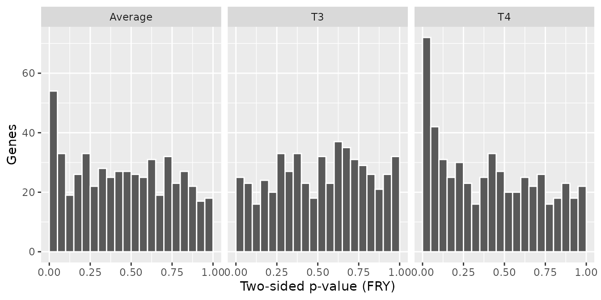
The share of genes with an effect can be estimated as one minus the share of uniform p-values (estimated from the p-values above 0.5):
with_effect <- function(result) {
1 - min(1, mean(two_sided(result) > 0.5) / 0.5)
}
round(sapply(tests[c("T3", "T4", "Average")], with_effect), 2)
#> T3 T4 Average
#> 0.00 0.18 0.09About 0% of the genes respond to the treatment at T3 and 18% at T4:
at T3 there is no detectable treatment effect, while at
T4 a group of genes changes. The same is visible in the distribution of
the barcode log2 fold changes (treated vs control), which is wider at
T4. The tables of compute_metrics() do not carry the
palettes of the object, so the Day palette is given to the plot:
metrics <- list(
T3 = compute_metrics(object, control = "CTRL", treatment = "TRT",
day = "T3"),
T4 = compute_metrics(object, control = "CTRL", treatment = "TRT",
day = "T4")
)
plot_zscore_distribution(metrics, alpha = 0.5,
palette = get_palettes(object)$Day)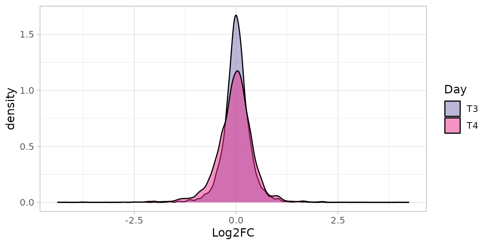
Treatment-specific hits
At each time point, with several methods
hits_t3 <- filter(tests$T3, FDR <= 0.05)
hits_t4 <- filter(tests$T4, FDR <= 0.05)
hits_t4
#> # A tibble: 7 × 5
#> Gene NBarcodes Log2FC PValue FDR
#> <chr> <int> <dbl> <dbl> <dbl>
#> 1 Gene_422 10 -0.419 0.000179 0.0318
#> 2 Gene_173 10 -0.500 0.000190 0.0318
#> 3 Gene_412 10 -0.311 0.000218 0.0318
#> 4 Gene_15 10 -0.310 0.000305 0.0318
#> 5 Gene_349 10 -0.167 0.000312 0.0318
#> 6 Gene_296 10 -0.491 0.000357 0.0318
#> 7 Gene_322 10 -0.380 0.000533 0.0407At 5% FDR, FRY finds 0 depleted genes at T3 and 7 at T4.
ScreenR has other gene-level tests, which look at the same barcodes with different assumptions. Running them all on the same contrasts tells how much a hit depends on the choice of the method:
-
FRY and ROAST
(
find_roast_hit()) are self-contained tests: are the shRNAs of the gene depleted, relative to the variability between replicates? ROAST computes its p-values by random rotations, FRY with a fast approximation of them. -
CAMERA (
find_camera_hit()) is a competitive test: is the gene more depleted than the other genes of the library, allowing for the correlation between the shRNAs of a gene? - The gene-level Z-score test
(
find_gene_zscore_hit()) compares the mean Z-score of the shRNAs of a gene with a null distribution: random sets of barcodes (the default) or an empirical null estimated from all the genes (see Choosing the reference of the gene-level test). The Z-scores come fromcompute_barcode_statistics(), which tests every barcode with the same edgeR model, so they include the replicate variability. It is also a competitive test.
run_methods <- function(contrast) {
statistics <- compute_barcode_statistics(object, design, contrast)
list(
FRY = find_roast_hit(object, design, contrast, method = "fry",
direction = "Down", fdr = 1),
ROAST = find_roast_hit(object, design, contrast, method = "roast",
nrot = 9999, seed = 1, direction = "Down", fdr = 1),
CAMERA = find_camera_hit(object, design, contrast,
direction = "Down", fdr = 1),
`Z-score, empirical null` = find_gene_zscore_hit(statistics,
reference = "empirical", fdr = 1),
`Z-score, random barcodes` = find_gene_zscore_hit(statistics,
n_permutations = 1e5, seed = 1, fdr = 1)
)
}
methods_t3 <- run_methods(contrasts$T3)
methods_t4 <- run_methods(contrasts$T4)
sapply(list(T3 = methods_t3, T4 = methods_t4), function(results) {
sapply(results, function(result) sum(result$FDR <= 0.05))
})
#> T3 T4
#> FRY 0 7
#> ROAST 0 7
#> CAMERA 0 0
#> Z-score, empirical null 0 0
#> Z-score, random barcodes 0 0plot_common_hit() shows how the hits of the methods
overlap. With more than three methods it draws an UpSet plot: each
column is a combination of methods (the dots below), and its bar counts
the genes found by exactly those methods; the bars on the left are the
hits of each method.
plot_common_hit(methods_t4, fdr = 0.05,
title = "Depleted genes at T4 (5% FDR)")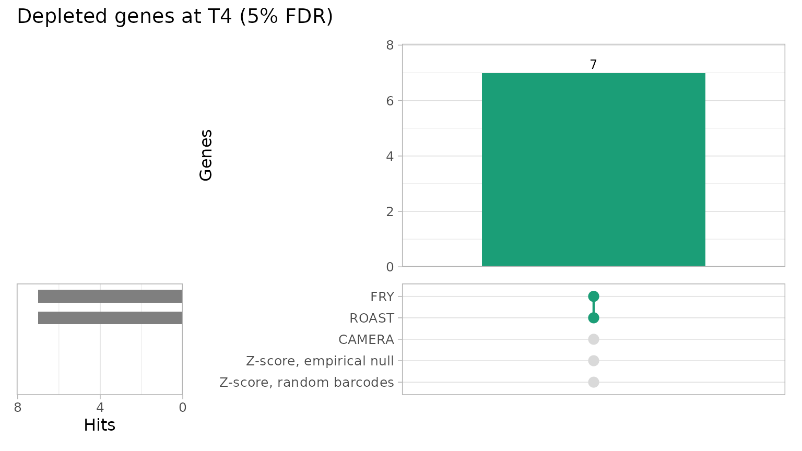
At T4 the two self-contained tests agree exactly, while the competitive tests find no gene at 5% FDR. At a looser threshold the overlap shows which genes come closest to the competitive tests as well:
plot_common_hit(methods_t4, fdr = 0.25,
title = "Depleted genes at T4 (25% FDR)")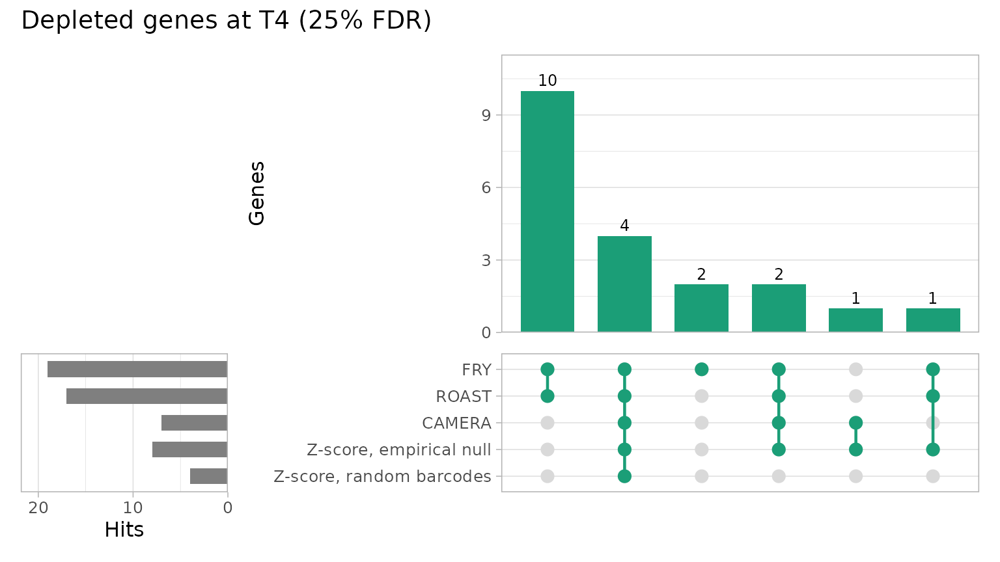
At T3 no method finds any depleted gene:
plot_common_hit(methods_t3, fdr = 0.05,
title = "Depleted genes at T3 (5% FDR)")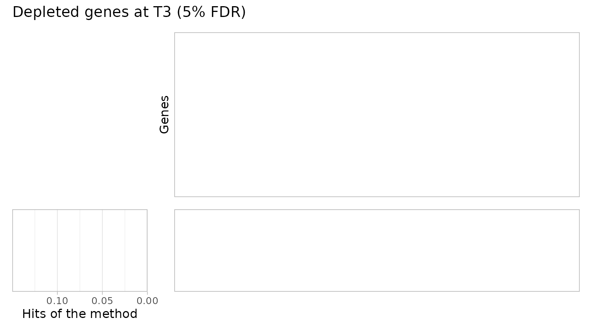
summarise_hits() puts the FDR of every method in one
table:
agreement <- summarise_hits(methods_t4, fdr = 0.05)
agreement %>%
filter(Gene %in% hits_t4$Gene) %>%
select(Gene, NMethods, starts_with("FDR")) %>%
knitr::kable(digits = 3)| Gene | NMethods | FDR_FRY | FDR_ROAST | FDR_CAMERA | FDR_Z-score, empirical null | FDR_Z-score, random barcodes |
|---|---|---|---|---|---|---|
| Gene_173 | 2 | 0.032 | 0.042 | 0.082 | 0.069 | 0.133 |
| Gene_422 | 2 | 0.032 | 0.037 | 0.082 | 0.111 | 0.179 |
| Gene_296 | 2 | 0.032 | 0.037 | 0.082 | 0.149 | 0.199 |
| Gene_15 | 2 | 0.032 | 0.037 | 0.225 | 0.149 | 0.199 |
| Gene_349 | 2 | 0.032 | 0.037 | 0.261 | 0.307 | 0.367 |
| Gene_412 | 2 | 0.032 | 0.037 | 0.288 | 0.521 | 0.580 |
| Gene_322 | 2 | 0.041 | 0.042 | 0.726 | 0.307 | 0.367 |
The two kinds of tests ask different questions. FRY and ROAST call a gene when its shRNAs are depleted more than the replicates vary; CAMERA and the Z-score tests call it only when it is more depleted than the other genes of the library. The effects at T4 are moderate (median log2 fold changes between -0.5 and -0.17): they are reproducible depletions, but they do not stand out against all the other genes. These are candidates with moderate effects; the next sections collect the evidence needed to choose which of them to validate.
Across the two time points: three different questions
“Consistently depleted over time” can mean three different things, which need three different tests. Being significant at T3 and, separately, at T4 answers none of them exactly.
- Is the gene depleted at T3 and at T4? This is tested by the intersection-union test: the gene is called only if both one-sided tests reject, so its p-value is the larger of the two (p = max(pT3, pT4)), corrected for the number of genes. It tests depletion at every specified time point; it does not establish equal effect sizes or replication in an independent experiment.
-
Is the gene depleted on average over the two time
points? The
Averagecontrast tests the mean of the two treatment effects. It can be significant because of one time point only. -
Does the treatment effect change between T3 and T4?
This is the interaction, (T4 treated - T4 control) - (T3 treated - T3
control), tested by
find_time_hit()(next section).
find_consistent_hit() runs this test directly, retaining
all gene-level one-sided p-values before combining them and adjusting
across genes. FRY, ROAST, CAMERA and gene-level Z-score tests are
supported; the interpretation follows the chosen method. For complete
precomputed tables of one-sided raw p-values, use
combine_consistent_hits(). Missing genes or p-values are
errors, and filtered hit lists must not be used. Both functions offer BH
correction or the more conservative BY correction for arbitrary
dependence across genes.
consistent <- find_consistent_hit(object, design,
contrasts = contrasts[c("T3", "T4")], method = "fry",
direction = "Down", fdr = 1)
# Keep all genes for the following summaries and classification.
genes <- consistent$Gene
both <- consistent %>%
dplyr::rename(P_T3 = PValue_T3, P_T4 = PValue_T4,
PValue_both = PValue, FDR_both = FDR) %>%
mutate(FDR_average = tests$Average$FDR[match(Gene, tests$Average$Gene)])
head(both, 5)
#> # A tibble: 5 × 10
#> Gene Direction NContrasts PValue_both FDR_both P_T3 Log2FC_T3 P_T4
#> <chr> <chr> <int> <dbl> <dbl> <dbl> <dbl> <dbl>
#> 1 Gene_173 Down 2 0.0134 0.999 0.0134 -0.211 0.000190
#> 2 Gene_457 Down 2 0.0402 0.999 0.00938 -0.121 0.0402
#> 3 Gene_121 Down 2 0.0506 0.999 0.0506 -0.0741 0.00860
#> 4 Gene_394 Down 2 0.0580 0.999 0.0580 -0.0813 0.0474
#> 5 Gene_293 Down 2 0.0601 0.999 0.0601 -0.134 0.0451
#> # ℹ 2 more variables: Log2FC_T4 <dbl>, FDR_average <dbl>
c(
`depleted at T3 and at T4 (intersection-union)` =
sum(both$FDR_both <= 0.05),
`depleted on average` = sum(both$FDR_average <= 0.05),
`depleted at T4` = nrow(hits_t4)
)
#> depleted at T3 and at T4 (intersection-union)
#> 0
#> depleted on average
#> 0
#> depleted at T4
#> 7No gene is depleted at both time points, and the average effect identifies 0 gene(s): the average is diluted by the T3 effects, which are close to zero. In this screen the treatment-specific depletion appears at T4; it is not a constant effect present from T3.
Does the effect change over time?
find_time_hit() fits a single model to the control and
treated samples of the two time points, with a separate line for each
condition, and tests the difference between their slopes, the change of
the treatment effect from T3 to T4, with CAMERA. With two time points
this is the interaction defined above. It uses only the samples of the
given days, so its variance estimates differ slightly from those of the
model with all the samples.
time_hits <- find_time_hit(object, treatment = "TRT", control = "CTRL",
days = c("T3", "T4"), direction = "Down", fdr = 1)
head(time_hits)
#> # A tibble: 6 × 6
#> Gene NGenes Direction PValue FDR Log2FC
#> <chr> <dbl> <fct> <dbl> <dbl> <dbl>
#> 1 Gene_296 10 Down 0.000596 0.318 -0.675
#> 2 Gene_372 12 Down 0.00156 0.323 -0.727
#> 3 Gene_422 10 Down 0.00181 0.323 -0.470
#> 4 Gene_412 10 Down 0.00480 0.483 -0.568
#> 5 Gene_419 10 Down 0.00510 0.483 -0.579
#> 6 Gene_87 10 Down 0.00566 0.483 -0.409
sum(time_hits$FDR <= 0.05)
#> [1] 0
time_hits %>%
filter(Gene %in% hits_t4$Gene) %>%
select(Gene, Log2FC, PValue, FDR)
#> # A tibble: 7 × 4
#> Gene Log2FC PValue FDR
#> <chr> <dbl> <dbl> <dbl>
#> 1 Gene_296 -0.675 0.000596 0.318
#> 2 Gene_422 -0.470 0.00181 0.323
#> 3 Gene_412 -0.568 0.00480 0.483
#> 4 Gene_349 -0.267 0.00633 0.483
#> 5 Gene_15 -0.303 0.0425 0.860
#> 6 Gene_322 -0.352 0.0528 0.865
#> 7 Gene_173 -0.494 0.0594 0.881By default find_time_hit() numbers the time points 0, 1,
2, …, as if they were equally spaced. With the real times (here we
assume 7 and 14 days after the end of the selection, the usual schedule
of this protocol), the Log2FC column becomes the change of
the treatment effect per day. With two time points the model is
saturated, so the p-values do not change; with three or more time points
that are not equally spaced, the real times fit the change of the
treatment effect against the actual time and do change the results.
time_hits_days <- find_time_hit(object, treatment = "TRT", control = "CTRL",
days = c("T3", "T4"), time = c(T3 = 7, T4 = 14), direction = "Down",
fdr = 1)
same_genes <- match(time_hits$Gene, time_hits_days$Gene)
all.equal(time_hits_days$PValue[same_genes], time_hits$PValue)
#> [1] TRUE
head(select(time_hits_days, Gene, Log2FC, PValue))
#> # A tibble: 6 × 3
#> Gene Log2FC PValue
#> <chr> <dbl> <dbl>
#> 1 Gene_296 -0.0964 0.000596
#> 2 Gene_372 -0.104 0.00156
#> 3 Gene_422 -0.0672 0.00181
#> 4 Gene_412 -0.0812 0.00480
#> 5 Gene_419 -0.0826 0.00510
#> 6 Gene_87 -0.0585 0.00566No gene passes the FDR threshold. 4 of the 7 T4 hits have p-values below 0.01 for a stronger depletion at T4 than at T3, which agrees with an effect that develops over time, but this is not significant after correcting for the number of genes. A non-significant interaction is not evidence that the effect is the same at the two time points: it only means that a change could not be demonstrated with three replicates. Showing that two effects are equal would need an equivalence test, which ScreenR does not provide (see Limitations).
Essential genes: loss of fitness in all the cultures
Some genes are depleted in every culture, treated or not, because the cells need them to grow. They are found with the fitness contrasts (T4 against the post-selection baseline) in each condition.
fitness <- tibble(Gene = genes) %>%
mutate(
Log2FC_CTRL = tests$Fitness_CTRL$Log2FC[
match(Gene, tests$Fitness_CTRL$Gene)],
FDR_CTRL = tests$Fitness_CTRL$FDR[
match(Gene, tests$Fitness_CTRL$Gene)],
Log2FC_TRT = tests$Fitness_TRT$Log2FC[
match(Gene, tests$Fitness_TRT$Gene)],
FDR_TRT = tests$Fitness_TRT$FDR[match(Gene, tests$Fitness_TRT$Gene)],
FDR_treatment = tests$T4$FDR[match(Gene, tests$T4$Gene)]
)
essential <- fitness %>%
filter(FDR_CTRL <= 0.05, FDR_TRT <= 0.05, FDR_treatment > 0.05) %>%
arrange(Log2FC_CTRL)
nrow(essential)
#> [1] 13
head(essential, 5)
#> # A tibble: 5 × 6
#> Gene Log2FC_CTRL FDR_CTRL Log2FC_TRT FDR_TRT FDR_treatment
#> <chr> <dbl> <dbl> <dbl> <dbl> <dbl>
#> 1 Gene_364 -3.65 0.0000188 -4.07 0.0000185 0.248
#> 2 Gene_372 -2.32 0.0000864 -2.59 0.0000266 0.302
#> 3 Gene_323 -1.57 0.00404 -1.39 0.00217 0.777
#> 4 Gene_374 -1.57 0.000634 -1.49 0.000308 0.370
#> 5 Gene_80 -1.50 0.0234 -0.616 0.0292 0.99913 genes are depleted in both conditions with no significant treatment effect: they behave like essential genes. They are not treatment-specific hits, even though they are among the most depleted genes of the screen. For the two most depleted ones the treated cultures lose slightly more than the controls at T4 (see the figure below), but this treatment effect is not significant. The baseline has a single sample, so these contrasts rely on the variability estimated from the replicated groups.
Classification of the genes
Each gene gets one class, from the tests above:
classes <- both %>%
left_join(select(fitness, Gene, FDR_CTRL, FDR_TRT), by = "Gene") %>%
mutate(
FDR_T3 = tests$T3$FDR[match(Gene, tests$T3$Gene)],
FDR_T4 = tests$T4$FDR[match(Gene, tests$T4$Gene)],
Class = case_when(
FDR_both <= 0.05 ~ "Treatment: T3 and T4",
FDR_T4 <= 0.05 ~ "Treatment: T4",
FDR_T3 <= 0.05 ~ "Treatment: T3",
FDR_CTRL <= 0.05 & FDR_TRT <= 0.05 ~ "Fitness (both conditions)",
TRUE ~ "Not significant"
)
)
dplyr::count(classes, Class)
#> # A tibble: 3 × 2
#> Class n
#> <chr> <int>
#> 1 Fitness (both conditions) 13
#> 2 Not significant 514
#> 3 Treatment: T4 7The figure that summarizes the screen compares the treatment effect of each gene at T3 and at T4. Genes depleted at both time points would lie in the lower left quadrant, near the diagonal; genes whose effect appears at T4 lie below zero on the vertical axis only.
colours <- c(
"Treatment: T3 and T4" = "#D95F02", "Treatment: T4" = "#E7298A",
"Treatment: T3" = "#7570B3", "Fitness (both conditions)" = "#1B9E77",
"Not significant" = "grey75"
)
# Label the treatment hits and the two most depleted fitness genes
labelled <- filter(classes, startsWith(Class, "Treatment") |
Gene %in% essential$Gene[1:2])
ggplot(arrange(classes, Class != "Not significant"),
aes(Log2FC_T3, Log2FC_T4, colour = Class)) +
geom_hline(yintercept = 0, colour = "grey60") +
geom_vline(xintercept = 0, colour = "grey60") +
geom_abline(linetype = "dashed", colour = "grey60") +
geom_point(size = 1.8) +
geom_text(data = labelled, aes(label = Gene), size = 2.6,
vjust = -0.8, show.legend = FALSE) +
scale_colour_manual(values = colours, drop = FALSE) +
labs(
x = "Treatment effect at T3 (median log2 fold change, TRT vs CTRL)",
y = "Treatment effect at T4 (median log2 fold change, TRT vs CTRL)",
colour = NULL
) +
coord_equal()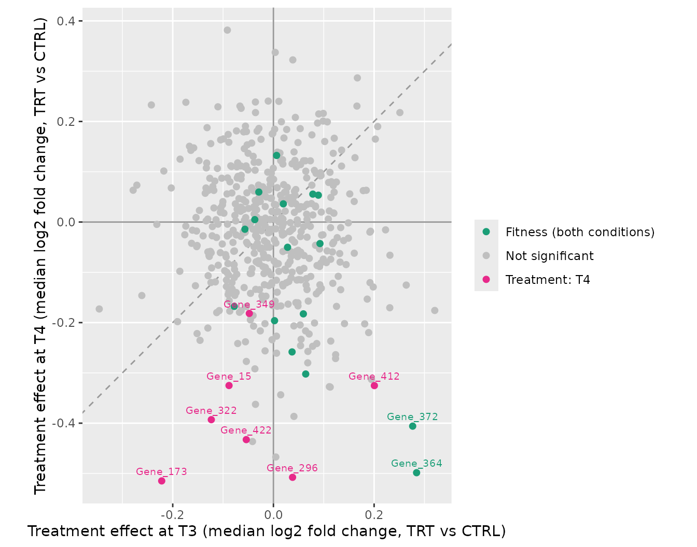
The treatment-specific hits are depleted at T4 (negative vertical axis) with small or no effects at T3 (horizontal axis): they lie away from the diagonal, because their depletion appears between the two time points. Most fitness genes have small treatment effects: they are lost in treated and control cultures alike, so treated and control samples of the same time point differ little even though both are strongly depleted over time.
From candidates to the hits to validate
A gene-level FDR is the starting point, not the end of the analysis. Before spending time on validation, each candidate is checked against the questions that make a hit credible:
- Is it found by more than one method? Here: FRY and ROAST, the two self-contained tests, both at 5% FDR.
-
Is it supported by several shRNAs? The number of
shRNAs of the gene that are depleted on their own (barcode p-value below
0.05 in
compute_barcode_statistics()), and the number of shRNAs that behave very differently from the others of the gene (find_discordant_barcodes()), which may point to off-target effects. - Does it depend on a single sample? The FRY FDR without T4_TRT_1, the treated replicate that resembles the controls.
- Is it treatment-specific? Whether the gene is also lost in the control cultures (fitness contrast against the baseline): then the treatment enhances a loss of fitness rather than creating a new dependency.
- How does it behave over time? Its effect at T3 and the p-value of the interaction, a stronger depletion at T4 than at T3.
Sensitivity to one replicate
without <- object[, colnames(object) != "T4_TRT_1"]
design_without <- create_design_matrix(without)
t4_without <- find_roast_hit(without, design_without,
create_contrast(design_without, "T4_TRT", "T4_CTRL"),
method = "fry", direction = "Down", fdr = 1)
c(`T4 hits without T4_TRT_1` = sum(t4_without$FDR <= 0.05),
`of which also hits with all the samples` =
sum(t4_without$Gene[t4_without$FDR <= 0.05] %in% hits_t4$Gene))
#> T4 hits without T4_TRT_1 of which also hits with all the samples
#> 4 2Without T4_TRT_1, 4 genes pass 5% FDR at T4, 2 of them among the 7 hits found with all the samples, and 6 of these 7 hits keep an FDR of at most 10%. With one treated replicate fewer at T4 the test has less power: most hits fall just above the threshold rather than disappearing. The direction of the evidence does not depend on this replicate, but its strength does, which is one more reason to validate the hits independently. (The subset keeps the normalization of the full object: its samples keep their effective library sizes.)
The evidence for each candidate
statistics_t4 <- compute_barcode_statistics(object, design, contrasts$T4)
discordant <- find_discordant_barcodes(metrics$T4, threshold = 3)
fdr_of <- function(result, genes) result$FDR[match(genes, result$Gene)]
evidence <- tibble(Gene = hits_t4$Gene) %>%
mutate(
Log2FC_T4 = tests$T4$Log2FC[match(Gene, tests$T4$Gene)],
Log2FC_T3 = tests$T3$Log2FC[match(Gene, tests$T3$Gene)],
FDR_FRY = fdr_of(methods_t4$FRY, Gene),
FDR_ROAST = fdr_of(methods_t4$ROAST, Gene),
FDR_CAMERA = fdr_of(methods_t4$CAMERA, Gene),
shRNAs = vapply(Gene, function(gene) {
sum(statistics_t4$Gene == gene)
}, integer(1)),
Depleted_shRNAs = vapply(Gene, function(gene) {
sum(statistics_t4$Gene == gene & statistics_t4$Log2FC < 0 &
statistics_t4$PValue < 0.05)
}, integer(1)),
Discordant_shRNAs = vapply(Gene, function(gene) {
sum(discordant$Gene == gene)
}, integer(1)),
FDR_without_T4_TRT_1 = fdr_of(t4_without, Gene),
FDR_fitness_CTRL = tests$Fitness_CTRL$FDR[
match(Gene, tests$Fitness_CTRL$Gene)],
P_interaction = time_hits$PValue[match(Gene, time_hits$Gene)]
)The candidates are ranked with explicit rules, written once in the code so that they can be read, discussed and changed:
- Priority 1: found by FRY and ROAST, supported by at least three shRNAs depleted on their own, with no discordant shRNA;
- Priority 2: found by FRY and ROAST, but supported by fewer shRNAs;
- Not recommended: the call relies on discordant shRNAs (more discordant shRNAs than shRNAs depleted on their own).
Caveats that do not change the priority but must be kept in mind are listed next to each gene.
evidence <- evidence %>%
mutate(
Priority = factor(case_when(
Discordant_shRNAs > Depleted_shRNAs ~ "Not recommended",
FDR_FRY <= 0.05 & FDR_ROAST <= 0.05 & Depleted_shRNAs >= 3 &
Discordant_shRNAs == 0 ~ "Priority 1",
FDR_FRY <= 0.05 & FDR_ROAST <= 0.05 ~ "Priority 2",
TRUE ~ "Not recommended"
), levels = c("Priority 1", "Priority 2", "Not recommended")),
Caveats = paste0(
ifelse(FDR_without_T4_TRT_1 > 0.05,
"depends on T4_TRT_1; ", ""),
ifelse(FDR_fitness_CTRL <= 0.05,
"also lost in the controls (fitness); ", ""),
ifelse(P_interaction > 0.05, "no clear increase from T3; ", ""),
ifelse(Depleted_shRNAs < 3,
paste(Depleted_shRNAs, "shRNA(s) depleted on their own; "),
"")
),
Caveats = sub("; $", "", Caveats)
) %>%
arrange(Priority, FDR_FRY, Log2FC_T4)
evidence %>%
select(Gene, Priority, Log2FC_T3, Log2FC_T4, FDR_FRY, FDR_ROAST,
FDR_CAMERA, Depleted_shRNAs, shRNAs, Discordant_shRNAs,
FDR_without_T4_TRT_1, P_interaction) %>%
knitr::kable(digits = 3)| Gene | Priority | Log2FC_T3 | Log2FC_T4 | FDR_FRY | FDR_ROAST | FDR_CAMERA | Depleted_shRNAs | shRNAs | Discordant_shRNAs | FDR_without_T4_TRT_1 | P_interaction |
|---|---|---|---|---|---|---|---|---|---|---|---|
| Gene_173 | Priority 1 | -0.211 | -0.500 | 0.032 | 0.042 | 0.082 | 5 | 10 | 0 | 0.052 | 0.059 |
| Gene_422 | Priority 1 | -0.043 | -0.419 | 0.032 | 0.037 | 0.082 | 4 | 10 | 0 | 0.028 | 0.002 |
| Gene_296 | Priority 2 | 0.051 | -0.491 | 0.032 | 0.037 | 0.082 | 2 | 10 | 0 | 0.106 | 0.001 |
| Gene_412 | Priority 2 | 0.213 | -0.311 | 0.032 | 0.037 | 0.288 | 2 | 10 | 0 | 0.052 | 0.005 |
| Gene_15 | Priority 2 | -0.076 | -0.310 | 0.032 | 0.037 | 0.225 | 2 | 10 | 0 | 0.052 | 0.043 |
| Gene_349 | Priority 2 | -0.034 | -0.167 | 0.032 | 0.037 | 0.261 | 2 | 10 | 1 | 0.028 | 0.006 |
| Gene_322 | Priority 2 | -0.111 | -0.380 | 0.041 | 0.042 | 0.726 | 2 | 10 | 2 | 0.052 | 0.053 |
Hits to validate
to_validate <- filter(evidence, Priority == "Priority 1")
also_consider <- filter(evidence, Priority == "Priority 2")
evidence %>%
select(Gene, Priority, Log2FC_T4, FDR_FRY, Caveats) %>%
knitr::kable(digits = 3)| Gene | Priority | Log2FC_T4 | FDR_FRY | Caveats |
|---|---|---|---|---|
| Gene_173 | Priority 1 | -0.500 | 0.032 | depends on T4_TRT_1; no clear increase from T3 |
| Gene_422 | Priority 1 | -0.419 | 0.032 | |
| Gene_296 | Priority 2 | -0.491 | 0.032 | depends on T4_TRT_1; also lost in the controls (fitness); 2 shRNA(s) depleted on their own |
| Gene_412 | Priority 2 | -0.311 | 0.032 | depends on T4_TRT_1; also lost in the controls (fitness); 2 shRNA(s) depleted on their own |
| Gene_15 | Priority 2 | -0.310 | 0.032 | depends on T4_TRT_1; 2 shRNA(s) depleted on their own |
| Gene_349 | Priority 2 | -0.167 | 0.032 | 2 shRNA(s) depleted on their own |
| Gene_322 | Priority 2 | -0.380 | 0.041 | depends on T4_TRT_1; no clear increase from T3; 2 shRNA(s) depleted on their own |
The hits that should be validated first are Gene_173, Gene_422. They are depleted in the treated cultures compared with the controls at T4 by the two self-contained tests at 5% FDR, with median log2 fold changes between -0.5 and -0.42, and each of them is supported by at least three shRNAs depleted on their own and by no discordant shRNA. Their caveats are in the table: a gene that is also lost in the controls is a treatment-enhanced loss of fitness rather than a new dependency created by the treatment, and a gene that depends on T4_TRT_1 should be confirmed in a new experiment before anything else. Gene_422 has no caveat: it is the most robust candidate of the screen.
Gene_296, Gene_412, Gene_15, Gene_349, Gene_322 are also depleted at T4 by both tests, but fewer of their shRNAs support them: they are second-line candidates. Genes marked “Not recommended” rely on shRNAs that behave unlike the others of the gene.
None of these genes is depleted at T3: these are late treatment effects, which validation experiments should measure at the later time point.
The hits at T3 and at T4
The normalized counts of the shRNAs of the hits to validate in the control and treated cultures of the two time points show the treatment effect directly: at T4 the treated cultures have lower counts than the controls, while at T3 the difference is small (the gene with a caveat on the time trend is the one already slightly lower at T3). The shRNAs of a gene have very different abundances, so each box spans a wide range: the comparison is between treated and control samples of the same time point.
plot_boxplot(object, genes = to_validate$Gene,
group_var = c("CTRL", "TRT"), fill_var = "Treatment",
ncol = nrow(to_validate)) +
scale_y_continuous(transform = "log1p",
breaks = c(0, 10, 100, 1000, 10000)) +
scale_x_discrete(guide = guide_axis(angle = 60))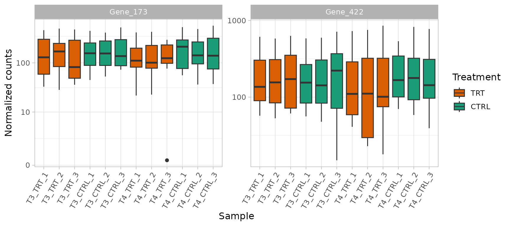
plot_barcode_trend() follows each shRNA from T3 to T4
(log2 fold change of treated vs control). In each gene several shRNAs go
from no effect at T3 to a depletion at T4:
plot_barcode_trend(metrics, genes = to_validate$Gene,
n_col = nrow(to_validate))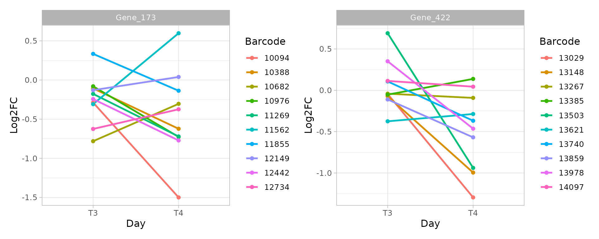
plot_barcode_hit() places the shRNAs of a gene among all
the barcodes of the library, ranked by their log2 fold change. For the
first hit to validate, at T3 and at T4:
top_hit <- to_validate$Gene[1]
plot_barcode_hit(object, design, contrasts$T3, gene = top_hit) +
plot_annotation(caption = "Treated vs control at T3")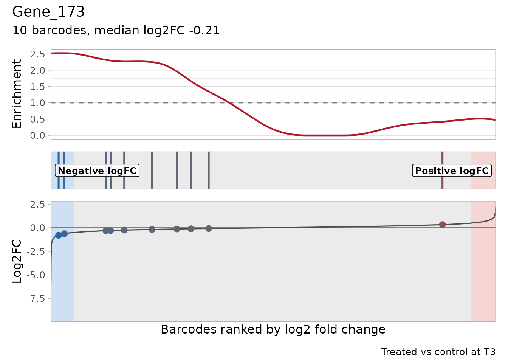
plot_barcode_hit(object, design, contrasts$T4, gene = top_hit) +
plot_annotation(caption = "Treated vs control at T4")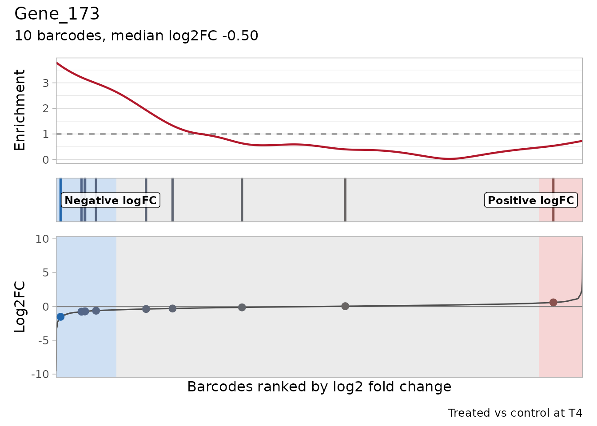
At T3 the shRNAs of the gene are spread over the ranking; at T4 several of them are among the most depleted barcodes of the library.
Overlaying the control and treatment in each gene panel shows the complete screen: T0, the post-selection baseline, T3 and T4. Grey crosses are the shared reference observations, displayed once. The grey line connects the references; each colored trajectory starts from the last shared reference and then joins that condition’s sample means. The reference is used only as a graphical anchor, not as an extra replicate. Small colored points are biological samples, each summarized across the gene’s shRNAs.
top_essential <- essential$Gene[1]
trend_genes <- c(to_validate$Gene, top_essential)
combined_trends <- plot_trend(object, genes = trend_genes,
group_var = c("Infected", "Baseline", "CTRL", "TRT"),
color_by = "Treatment", trend = "mean",
reference_groups = c("Infected", "Baseline"), connect_reference = TRUE,
highlight_difference = TRUE, ncol = 2, point_size = 1.8) +
labs(x = "Screen stage (equally spaced)")
combined_trends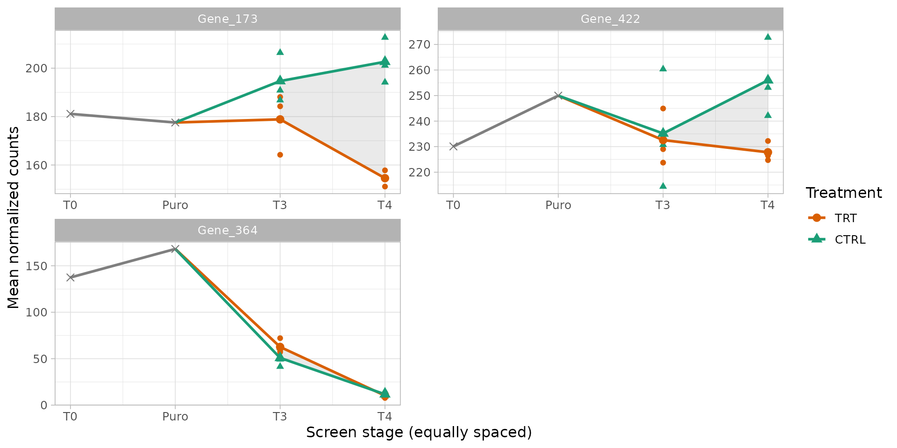
The shaded band highlights the observed difference between control
and treatment means at their shared time points. It is not a confidence
band. All stages are included, with equally spaced positions rather than
assumed elapsed times. trend = "lm" instead fits separate
regressions; its optional se band describes that
regression, not gene-level treatment-effect uncertainty. These plotting
functions apply no theme: the theme_set() above controls
their appearance.
Large changes shared by both cultures can hide a moderate treatment
effect on the abundance scale. This companion view shows the
treated/control ratio of the sample means at T3 and T4, with percentage
differences labeled. There is no treated/control comparison before the
cultures split, so T0 and Puro have no effect points. These are
descriptive ratios, not the median shRNA log2 fold changes or p-values
reported by the gene-level tests. The exported
plot_treatment_separation() function accepts any two
condition names, custom condition_column and
time_column metadata, an optional named time
mapping and a samples selection. It can also display one
comparable stage. For screens with multiple cell lines or doses, select
a single experimental stratum with samples before averaging
replicates.
plot_treatment_separation(object, genes = trend_genes,
treatment = "TRT", control = "CTRL", ncol = 2) +
labs(x = "Screen stage (equally spaced)")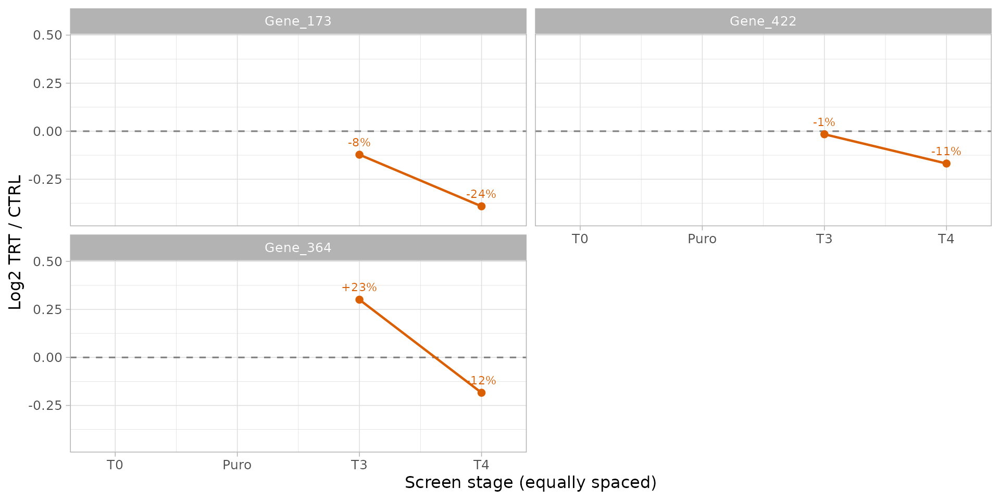
A barcode heatmap complements the gene summaries. Each row is one shRNA and each column one biological sample, including both references. Here log2 normalized abundance is centered on each shRNA’s mean over the displayed samples: red and blue mean higher and lower abundance relative to that shRNA’s own average. Colors do not represent significance, and rows are reagents rather than independent biological replicates.
plot_barcode_heatmap(object, genes = trend_genes,
center = "barcode", column_group = "Day") +
scale_x_discrete(guide = guide_axis(angle = 60))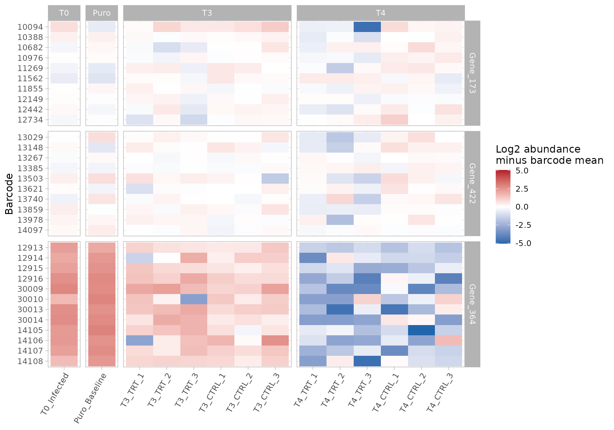
Conclusions
- The screen is of good quality: deep sequencing, no bottleneck at infection or selection, and consistent replicates. The treated replicates at T4 are heterogeneous (T4_TRT_1 is close to the controls): without it the T4 hits are weaker, most of them just above 5% FDR, so their strength depends on this replicate.
- The strongest depletion in the screen is a loss of fitness shared by control and treated cultures: 13 genes behave like essential genes and are not treatment hits.
- Treatment-specific depletion appears at T4, not at T3: 7 genes are depleted in treated compared with control cultures at T4 by the self-contained tests (5% FDR), with moderate effects; no gene is depleted at T3, and none at both time points.
- Hits to validate: Gene_173, Gene_422, with Gene_296, Gene_412, Gene_15, Gene_349, Gene_322 as second-line candidates. They should be validated as late effects of the treatment (at the later time point), with individual shRNAs or other reagents against the same genes; the competitive tests do not single them out, so independent confirmation is essential.
Limitations
The analysis above uses only methods whose statistical formulation fits the question. Some questions of a longitudinal design are not fully covered by ScreenR at present:
-
Consistency does not establish equal effects or independent
replication.
find_consistent_hit()tests a directional effect at every specified time point. It inherits the assumptions of the per-contrast tests and does not account for repeated cultures unless the underlying design does so. The classification shown above is specific to this analysis. - No equivalence test. ScreenR can show that a treatment effect changes over time (interaction), but not that it is the same at two time points: that needs an equivalence test with a margin chosen by the user.
-
Time as equally spaced steps.
find_time_hit()treats the time points as equally spaced and tests a linear change of the treatment effect; with two time points this is the interaction, with more it assumes linearity. - Gene-level effect sizes without uncertainty. The gene log2 fold change is the median over its shRNAs, reported without a confidence interval.
-
Independent replicates. The model treats the
replicates of different time points as independent cultures. If
replicate 1 at T3 and replicate 1 at T4 come from the same culture, a
design with the culture as a blocking factor would be more appropriate;
the edgeR/limma based functions accept any design matrix, but
create_design_matrix()does not build it. - Single-sample references. T0 and the baseline have one sample each, so the fitness contrasts rely on the variability estimated from the replicated groups.
- Multiplicity across questions. The FDR is controlled within each contrast, not over all the contrasts together.
Session info
sessionInfo()
#> R version 4.6.1 (2026-06-24)
#> Platform: x86_64-pc-linux-gnu
#> Running under: Ubuntu 26.04.1 LTS
#>
#> Matrix products: default
#> BLAS: /usr/lib/x86_64-linux-gnu/openblas-pthread/libblas.so.3
#> LAPACK: /usr/lib/x86_64-linux-gnu/openblas-pthread/libopenblasp-r0.3.32.so; LAPACK version 3.12.0
#>
#> locale:
#> [1] LC_CTYPE=C.UTF-8 LC_NUMERIC=C LC_TIME=C.UTF-8
#> [4] LC_COLLATE=C.UTF-8 LC_MONETARY=C.UTF-8 LC_MESSAGES=C.UTF-8
#> [7] LC_PAPER=C.UTF-8 LC_NAME=C LC_ADDRESS=C
#> [10] LC_TELEPHONE=C LC_MEASUREMENT=C.UTF-8 LC_IDENTIFICATION=C
#>
#> time zone: UTC
#> tzcode source: system (glibc)
#>
#> attached base packages:
#> [1] stats4 stats graphics grDevices utils datasets methods
#> [8] base
#>
#> other attached packages:
#> [1] patchwork_1.3.2 ggplot2_4.0.3
#> [3] dplyr_1.2.1 SummarizedExperiment_1.42.0
#> [5] Biobase_2.72.0 GenomicRanges_1.64.0
#> [7] Seqinfo_1.2.0 IRanges_2.46.0
#> [9] S4Vectors_0.50.3 BiocGenerics_0.58.1
#> [11] generics_0.1.4 MatrixGenerics_1.24.0
#> [13] matrixStats_1.5.0 ScreenR_1.15.16
#> [15] BiocStyle_2.40.0
#>
#> loaded via a namespace (and not attached):
#> [1] gtable_0.3.6 xfun_0.62 bslib_0.12.0
#> [4] htmlwidgets_1.6.4 lattice_0.22-9 vctrs_0.7.3
#> [7] tools_4.6.1 tibble_3.3.1 pkgconfig_2.0.3
#> [10] Matrix_1.7-5 RColorBrewer_1.1-3 S7_0.2.2
#> [13] desc_1.4.3 lifecycle_1.0.5 compiler_4.6.1
#> [16] farver_2.1.2 stringr_1.6.0 textshaping_1.0.5
#> [19] statmod_1.5.2 htmltools_0.5.9 sass_0.4.10
#> [22] yaml_2.3.12 tidyr_1.3.2 pillar_1.11.1
#> [25] pkgdown_2.2.1 jquerylib_0.1.4 DelayedArray_0.38.2
#> [28] cachem_1.1.0 limma_3.68.5 abind_1.4-8
#> [31] tidyselect_1.2.1 locfit_1.5-9.12 digest_0.6.39
#> [34] stringi_1.8.9 purrr_1.2.2 bookdown_0.48
#> [37] labeling_0.4.3 fastmap_1.2.0 grid_4.6.1
#> [40] cli_3.6.6 SparseArray_1.12.3 magrittr_2.0.5
#> [43] S4Arrays_1.12.1 utf8_1.2.6 withr_3.0.3
#> [46] edgeR_4.10.7 scales_1.4.0 rmarkdown_2.32
#> [49] XVector_0.52.0 otel_0.2.0 ragg_1.5.2
#> [52] evaluate_1.0.5 knitr_1.52 rlang_1.3.0
#> [55] glue_1.8.1 BiocManager_1.30.27 jsonlite_2.0.0
#> [58] R6_2.6.1 systemfonts_1.3.2 fs_2.1.0